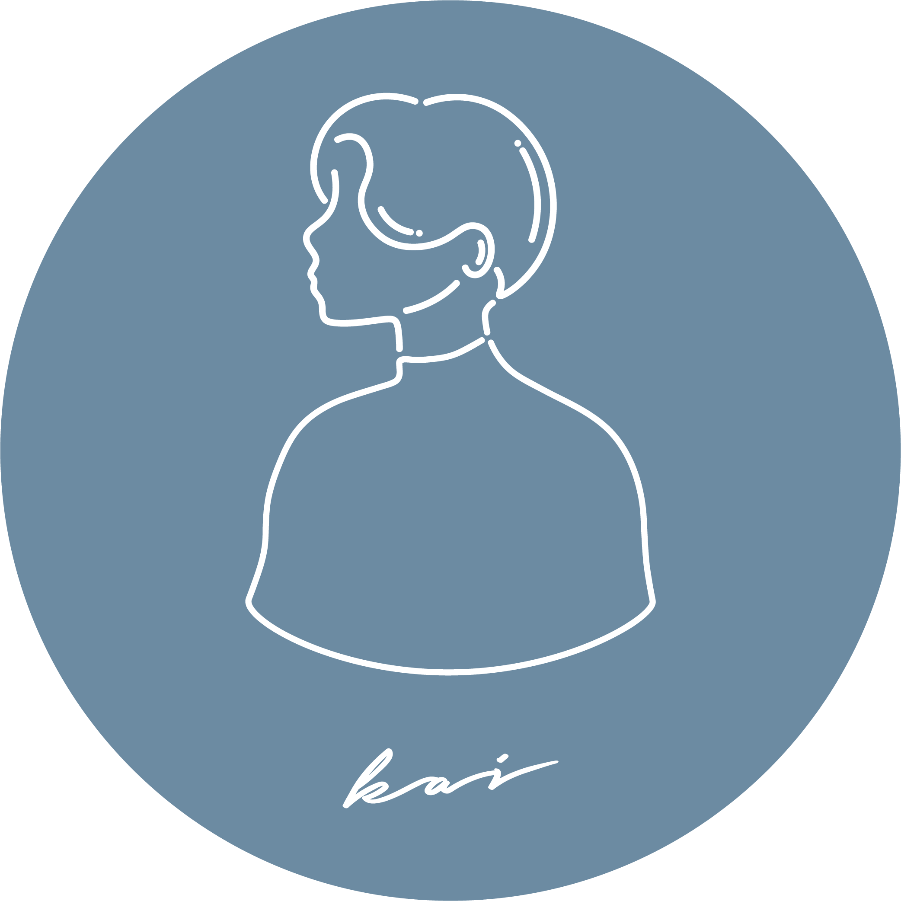

20代の頃は自身の音楽活動に没頭し赤坂BLITZなど1,000人規模のステージを経験してきました。
#自己紹介
KAI
20代の頃は自身の音楽活動に没頭し赤坂BLITZなど1,000人規模のステージを経験してきました。
その傍ら、独学でPhotoshopやIllustrator、コーディングを学び、
アーティストのWEBサイト、
CD・配信ジャケット、タオルやTシャツなどのグッズ、フライヤー等を作成してきました。
現在はこの経験を生かして、グラフィックデザインやWEBデザインを中心とした様々な物作りに幅広く携わりたいと考えております。
趣味は小説を読むこと。月に3、4冊読了しています。(ホラーやサスペンスは怖いので読みません。)
いまできること
Webサイト、バナーの制作をすることができます。閲覧者が操作に迷うことのないシンプルでわかりやすいデザインを心がけ、 些細なところまで丁寧に作り込見ます。また、足りないパーツをイラストやグラフィックで補うことも可能です。
| Photoshop | グラフィック処理、画像の補正、修正、合成、切り抜き、バナーの作成をすることができます。 |
| Illustrator | チラシ・名刺・イラスト・ロゴ・バナーなどの制作ができます。印刷会社への入稿も可能です。 |
| HTML / CSS | 規則性のある見やすいコーディングを行うことができます。 使用しているエディターはVisual Studio Codeです。 |
| JavaScript | jQueryを使用して動きを加えることができます。 |
| Figma |
ワイヤーフレームを制作します。(手書きのものを清書する時にも使用します。) |
強み
| 好奇心 | 自分の中の「なぜ」、「どうして」を凄く大事にしています。デザインのことやその他のことでも分からないことがあれば自力で探して調べて解決してきました。 |
| 探究心 | 興味のあることについてはとことん掘り下げ自分の知識にします。出来なかったことがその知識のお陰で出来るようになることに喜びを感じます。 |
| 継続力 | デザインの勉強はもちろんのこと、日々の読書や筋トレなど日課も含め、コツコツ積み重ね続けることが得意です。 |
お問合せ
デザインのご相談などお気軽にご連絡ください。
メールはこちらへ